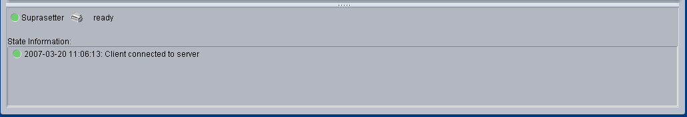

The status panel is shown in every Printmanager view. You may notice, that the window of the status panel is set too small to be visible in the user interface (see Fitting the Window Size). The status panel shows you details about monitored output devices and the job that is currently being imaged.

Status or error messages concerning the output device are listed in the "State Information" box.
Copyright © 2013 Heidelberger Druckmaschinen AG